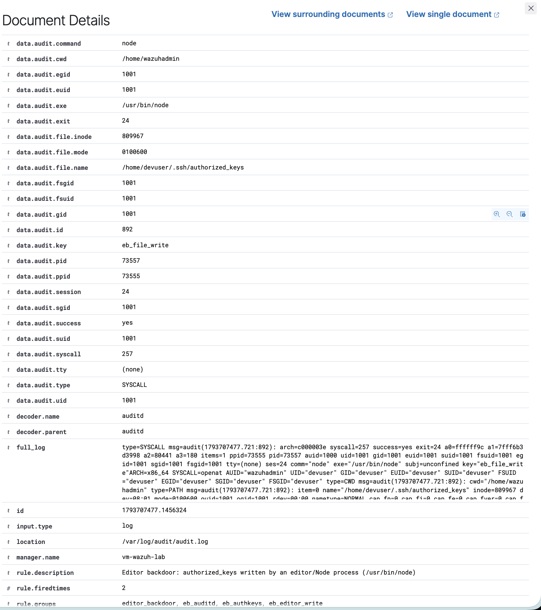
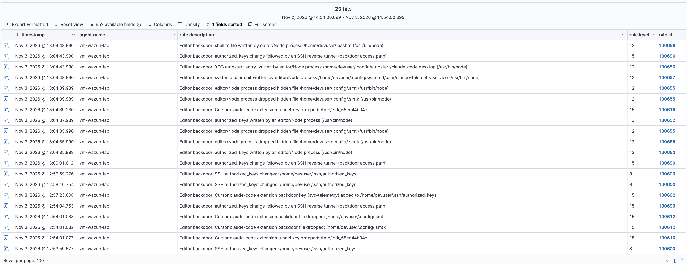
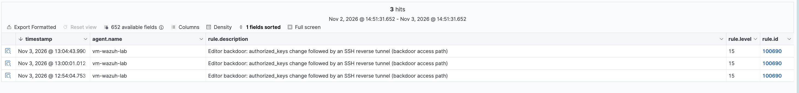

Who wrote that key? Catching Linux persistence from a trojanized editor extension
An editor extension plants an SSH backdoor across the Linux persistence surface — as an ordinary node process. The detection reduces to one question: who wrote this file? Here's the ruleset, and the one place Wazuh's obvious answer doesn't work.
On 29 October 2026 a trojanized anthropic.claude-code extension showed up on the Cursor marketplace. Microsoft Threat Intelligence pulled it apart: once installed, the extension host — an ordinary node process on the developer's machine — quietly established a persistent SSH backdoor.
That last detail is the whole story for a defender. The malicious actions are things a developer also does: add an SSH key, write a ~/.config file, drop a systemd unit. What makes them malicious is who did them. A human running ssh-keygen and editing authorized_keys is Tuesday. A code editor's extension host writing to authorized_keys is an incident.
This post builds a Wazuh ruleset around that single question — who wrote this file? — walks the persistence vectors this sample used (plus the adjacent ones the same watch catches for free), and is honest about the one place Wazuh's obvious answer doesn't work.
The persistence surface
On Linux the loader doesn't rely on one trick; it uses several footholds so that losing any one doesn't matter. Microsoft's teardown documents four on Linux — the SSH key, the reverse tunnel, a hidden ~/.config loader and a @reboot cron entry:
SSH authorized_keys backdoor key ~/.ssh/authorized_keys T1098.004
Reverse SSH tunnel (exposes sshd) ssh -R / autossh T1572
Hidden loader + key ~/.config/.smt, ~/.config/.smtk T1564.001
@reboot cron job /var/spool/cron/... T1053.003Because the recursive auditd watch below covers a whole subtree, the same ruleset also defends persistence vectors this sample didn't use but a loader like it easily could — for free:
XDG autostart entry ~/.config/autostart/*.desktop T1547.013
systemd user unit ~/.config/systemd/user/*.service T1543.002
Shell rc hook ~/.bashrc, ~/.zshrc, ... T1546.004Every one of these is a file write. So the detection reduces to: watch the sensitive paths, and for each write, capture the process that did it.
The lab
Everything below was validated on a throwaway cloud VM — don't do this on a box you care about.
- Wazuh 4.x all-in-one (indexer + manager + dashboard) on Ubuntu 24.04.
- auditd installed and running — Wazuh's who-data and our syscall rules both depend on it.
- A throwaway
devuserstanding in for the developer's account. The manager self-monitors as agent000, sodevuser's home is under FIM. - A safe re-enactment script. It generates a fresh key pair on the host (the real attacker key is never used) and points the tunnel at
127.0.0.1, so nothing leaves the machine. For the vectors the sample actually used it mirrors the real file names, key comment, crontab shape andssharguments (and uses illustrative names for the extra vectors the watch also covers); crucially it runs inside anodeprocess, exactly like an extension host.
$ sudo -u devuser node simulate.js # run the chain
$ sudo -u devuser node simulate.js --cleanup # undo itVector 1 — the SSH key, and the question Wazuh can't answer the obvious way
Start with the crown jewel: a key appended to authorized_keys. FIM catches the change immediately. Here's the real alert (trimmed):
{
"rule": { "id": "100600", "level": 8,
"description": "Editor backdoor: SSH authorized_keys changed" },
"syscheck": {
"path": "/home/devuser/.ssh/authorized_keys",
"event": "modified",
"audit": {
"process": { "name": "/usr/bin/node", "parent_name": "/usr/bin/sudo" },
"effective_user": { "name": "devuser" }
}
}
}Look at syscheck.audit.process.name: /usr/bin/node. The who-data engine knows a Node process wrote the key. So you'd write the escalation rule to match that field:
<rule id="100601" level="13">
<if_sid>100600</if_sid>
<field name="audit.process.name" type="pcre2">(?i)(?:^|/)(?:node|code|cursor|...)$</field>
<description>authorized_keys written by an editor/Node process</description>
</rule>It never fires.
The gotcha: FIM who-data is not rule-matchable. The syscheck.audit.* block is rendered into the alert JSON, but it is not exposed to the rule engine as a matchable <field>. I confirmed this the hard way — three probe rules matching a catch-all .+ under syscheck.audit.process.name, audit.process.name and process.name, and none of them matched. Wazuh's own stock ruleset never tries to match FIM who-data either. The data is for the analyst reading the alert, not for the correlation engine. If you've been copying field names out of the JSON and wondering why your FIM who-data rules are silent — that's why. (Confirmed on Wazuh 4.x; treat it as version-specific behaviour.)
Doing it properly: attribute the write with auditd
The fix is to stop relying on FIM for attribution and ask auditd directly. A syscall rule records every write under a subtree with the executing binary:
# auditd/62-eb-filewrite.rules
-a always,exit -F arch=b64 -F dir=/home -F perm=wa -F auid>=1000 -F auid!=unset -k eb_file_write
-a always,exit -F arch=b64 -F dir=/root -F perm=wa -k eb_file_write
-a always,exit -F arch=b64 -F dir=/var/spool/cron -F perm=wa -k eb_file_write-F dir= is recursive (unlike the non-recursive -w watch), so this one line covers every user's .ssh, .config, rc files and more. Now Wazuh's auditd decoder gives us audit.exe (the writer) and audit.file.name (the target) — both first-class, matchable fields:
<rule id="100650" level="0"> <!-- silent base -->
<if_sid>80700</if_sid>
<field name="audit.key">^eb_file_write$</field>
</rule>
<rule id="100651" level="8"> <!-- a write to authorized_keys -->
<if_sid>100650</if_sid>
<field name="audit.file.name" type="pcre2">/\.ssh/authorized_keys$</field>
<description>authorized_keys written ($(audit.exe))</description>
</rule>
<rule id="100652" level="13"> <!-- ...by an editor/Node process -->
<if_sid>100651</if_sid>
<field name="audit.exe" type="pcre2">(?i)(?:^|/)(?:node|nodejs|bun|deno|electron|cursor|code|code-insiders|code-oss|codium|windsurf)$</field>
<description>Editor backdoor: authorized_keys written by an editor/Node process ($(audit.exe))</description>
<mitre><id>T1098.004</id><id>T1195.002</id></mitre>
</rule>Run the simulator and 100652 fires at level 13:
Editor backdoor: authorized_keys written by an editor/Node process (/usr/bin/node)That's the detection. A developer adding their own key writes it with ssh-keygen, a text editor, or tee — never node. The level-13 alert says a program that has no business touching your SSH keys just added one.

data.audit.exe) is /usr/bin/node, not a human.Vectors 2–5 — the same move, everywhere
Because the auditd watch is a recursive subtree, the exact same pattern — match audit.file.name for the location, audit.exe for an editor process — covers the rest of the surface. One idea, five footholds:
<rule id="100655" level="12"> <!-- hidden ~/.config drop -->
<field name="audit.file.name" type="pcre2">/\.config/\.[^/]+$</field> ...
<rule id="100656" level="12"> <!-- XDG autostart -->
<field name="audit.file.name" type="pcre2">/\.config/autostart/</field> ...
<rule id="100657" level="12"> <!-- systemd user unit -->
<field name="audit.file.name" type="pcre2">/\.config/systemd/user/.*\.(service|timer)$</field> ...
<rule id="100658" level="12"> <!-- shell rc hook -->
<field name="audit.file.name" type="pcre2">/(\.bashrc|\.zshrc|\.profile|...)$</field> ...Each also carries the audit.exe editor check. In the lab, all four fire with exe=/usr/bin/node:
100655 editor/Node process dropped hidden file /home/devuser/.config/.smtk
100656 XDG autostart entry written by editor/Node process .../claude-code.desktop
100657 systemd user unit written by editor/Node process .../claude-telemetry.service
100658 shell rc file written by editor/Node process /home/devuser/.bashrcThis is the part FIM who-data could never have done, even if it were matchable: the autostart and systemd-user directories weren't in the original FIM scope at all. The auditd subtree watch gets them for free. Of these four, only the hidden ~/.config drop (100655) is a vector Microsoft observed in this sample; the autostart, systemd-user and rc-hook rules — and the illustrative names claude-code.desktop and claude-telemetry.service — are adjacent vectors the watch covers, not IOCs seen in the wild.

rule.groups:editor_backdoor.Vector 6 — the reverse tunnel, from the audit log
The tunnel is a process event, not a file event, so it comes from the ssh execute watch:
-w /usr/bin/ssh -p x -k eb_ssh_execLab note: augenrules refuses a -w watch on a path that doesn't exist (e.g. autossh when it isn't installed) and can reject the entire rules file. Either guard those lines or prefer the -F dir= syscall form.
The decoded execve arguments carry the tell-tale reverse-tunnel shape — -R *:0:localhost:22, StrictHostKeyChecking=no, and a hidden, short-lived identity file (the real sample names it with a .stk_+10-hex prefix). The high-value signal, though, is the correlation: an authorized_keys change followed by a reverse tunnel within ten minutes is the full backdoor being armed.
<rule id="100690" level="15" timeframe="600">
<if_matched_group>eb_authkeys</if_matched_group>
<if_group>eb_tunnel</if_group>
<description>authorized_keys change followed by an SSH reverse tunnel (backdoor access path)</description>
<mitre><id>T1098.004</id><id>T1572</id></mitre>
</rule>100690 fires at level 15 — the single alert you actually want paged on.

Two more honest caveats
FIM content rules are blind to a file's first creation. A rule matching the backdoor key comment with changed_content only works on a modification — the content diff doesn't exist the first time Wazuh sees a file. The real loader creates authorized_keys and the .smt files, so for first detection lean on the auditd writer rules and the file-existence IOCs, not the diff. (In the lab, the content rule fired only after a second write.)
crontab isn't written by the editor. /var/spool/cron is edited through the setuid crontab helper, so audit.exe is /usr/bin/crontab, not node. The @reboot entry is still catchable by content/IOC rules, but you won't get writer attribution for it — a good reminder that "who wrote it" has limits when a trusted helper sits in the middle.
Takeaways
- For "which process touched this file" on Linux, reach for auditd
-F dir=syscall rules, not FIM who-data. FIM tells you a file changed and shows the writer to a human; auditd lets the engine act on the writer. - A single recursive subtree watch replaces a pile of per-path rules. Match the location in
audit.file.nameand the actor inaudit.exe, and one auditd rule covers the whole persistence surface. - Detect creation by existence/attribution, correlate the kill chain. File-content diffs miss the first write; the alert you page on is the correlation (key added → tunnel up), not any single file event.
- The behavioural line is the clean one. You can't blocklist developers adding SSH keys. You can alert when a code editor's runtime does — that boundary is what turned a pile of benign-looking file writes into one level-15 incident.
More from the lab
Rules and the lab simulator are on GitHub. See also the Windows persistence write-up for the Sysmon side of the same idea.
editor-backdoor on GitHub ↗